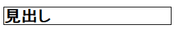
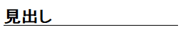
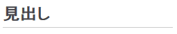
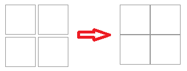
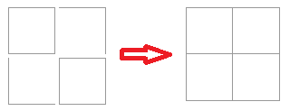

borderは要素の外枠を指定するCSS
borderは要素に外枠を表示する際に使用します。
{border: 線種 太さ 色;}
例えば、見出し要素の「h2」に、h2 {border:solid 1px #000000;}などと指定したとします。この場合、h2の見出し要素の外側にsolid(１本の実線)で、1pxの太さの枠を、#000000（黒色）で表示する」ことを意味します。

このborderは見出しタグのほか、サイト全体の外枠を指定する場合などでもよく使われます。サイト全体の外枠を指定する場合は、outerやwrapper、あるいはcontainerなど、一番外側の要素にborderを指定しておくとよいでしょう。
■下の枠線のみを引く
単にborderとだけ書いた場合、上下左右の四方の外枠すべてを指定することになりますが、「下の枠線」を引きたい場合には「border-bottom」を使用します。
例えば、h2 {border-bottom:solid 1px #000000;}などと指定すると、下の枠線のみが表示されます。

同じように、上の枠線だけを引く場合には「border-top」を、左や右に枠線を引く場合には「border-left」や「border-right」を指定します。
h2などの見出し要素に下線を引く場合、文字との距離が近くなってしまいますので、paddingやmarginなども合わせて指定し、適切な間隔をとるようにするとよいでしょう。また、外枠や下線の色は#ccccccなどの薄めの色で設定されているケースが多いです。
上の見出しにpaddingと下線の色を指定すると以下のようになります。

■2重線の double は3px以上で指定する
線の種類で２重線にする場合、solidの代わりにdoubleを指定し、{border: double 3px #000000;}などと記述しますが、この3pxは「内線の太さ＋外線の太さ＋隙間」の合計値になります。なので、1pxを指定した際は２重にはなりません。
2pxでも隙間分のpxがないため、1pxの線が重なって2pxの太さの線で表示されます。3px目からようやく、1pxの線2本分と隙間1px分で3pxという形で2重に表示されます。doubleを指定する際は3px以上を指定するようにしましょう。
■下線の<u>タグとの違い
「外枠」ではなく、文章中の文字に「下線」を引く場合、<u></u>のhtmlタグを引けば、その箇所に下線を引くことができます。この<u>タグのuは、under-lineの意味かと思いますが、スタイルシートのborderが「外枠」であるのに対し、htmlタグの<u>は「下線」を意味しています。
【例：<u>タグの例】
uタグは下線を引くhtmlタグで外枠ではありません。
文中で単に下線を引く場合、borderを使用するのは不自然ですので、できるだけ<u>タグを使うとよいでしょう。
■文中の区切りとしての横線は<hr>タグ
文中の文字単位ではなく、区切りとして単に横線を引く場合は<hr>タグを使用します。この<hr>タグは前後で改行されますので、uタグのように文字単位では使用できません。
このような「区切りの線」になりますので、こちらも外枠のborderとは違います。
見出しやサイドバーなどのボックス要素の外枠については、スタイルシートでborderを指定し、文中で下線を引く場合にはhtmlタグの<u>を、文中で区切りとして横線を引く場合には<hr>タグを使用するとよいでしょう。
borderを使わずに外枠を指定する方法
四角のボックスを並べる際、一般的にはtableタグを使用しますが、スマホ用サイトなどでリストタグをblock化して、横並びにフロートさせるケースもあるかと思います。
このような場合、単に「border:1px #999 solid;」などと指定すると、各ボックスの接する枠線が重なってしまい、二重に太く表示されてしまいます。

この場合、ボックスごとにidやclassを指定して、外枠を「上下左右」や「上と右だけ」などと個別に指定すると重なるのは回避できます。

けれども、この場合は各ボックスにidやclassなどを割り振る必要がありますし、それぞれにborder-bottomやborder-topなどを指定する必要が出てくるため、HTMLソースやCSSがごちゃごちゃになってしまいます。
また、外枠の1px分だけwidth幅が広がりますので、びったりとwidth幅を指定する必要がある場合、box-sizing: border-box;などを指定して、外枠をwidth幅や高さに含めないなどの指定もしなくてはいけません。
何とか無理やり指定することはできますが、あまりスマートな方法とはいえません。
このような場合、外枠に指定したい色でその領域に背景色を指定し、各ボックスの背景色を白にしてボックス間のmarginを0.5pxで指定します。

こうすることで、ボックス間の隙間から背景色が表示されますので、見た目上は1px分の外枠ができたのと同じように表示させることができます。
４つ程度のボックスならidやclassを指定して、それぞれにborder-topなどと指定しても手間はかかりませんが、大量に指定する際には上記のような方法も検討してみるとよいでしょう。
ただし、1px分の隙間を意図的に作るため、びっちりwidthを指定している場合などは崩れてしまうことがありますので注意しましょう